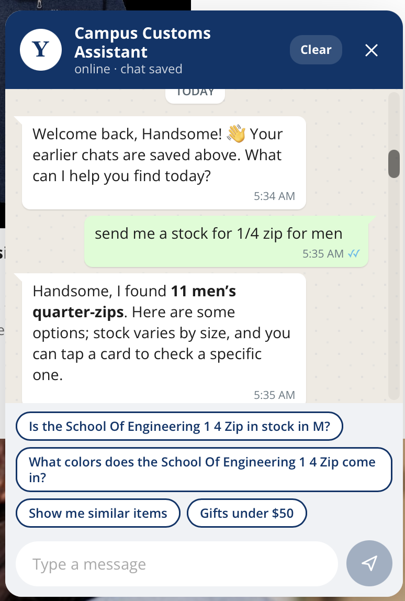
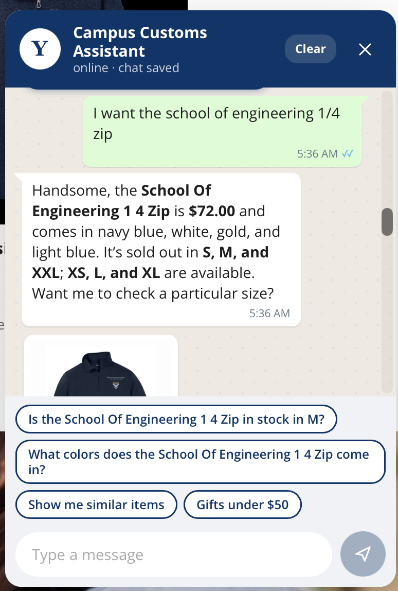
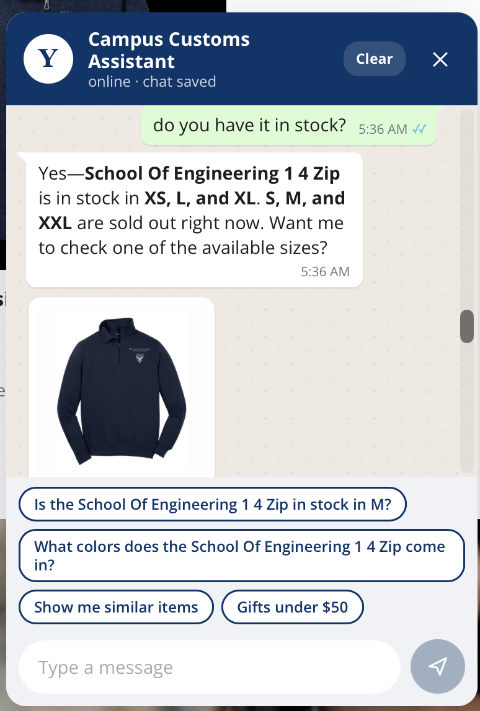
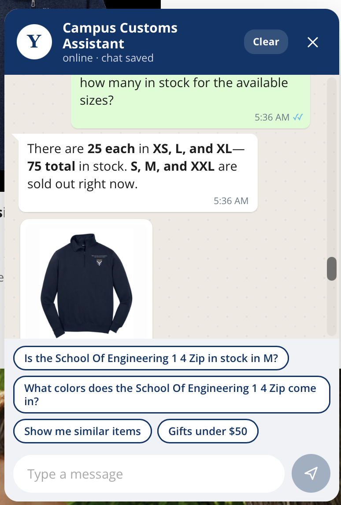
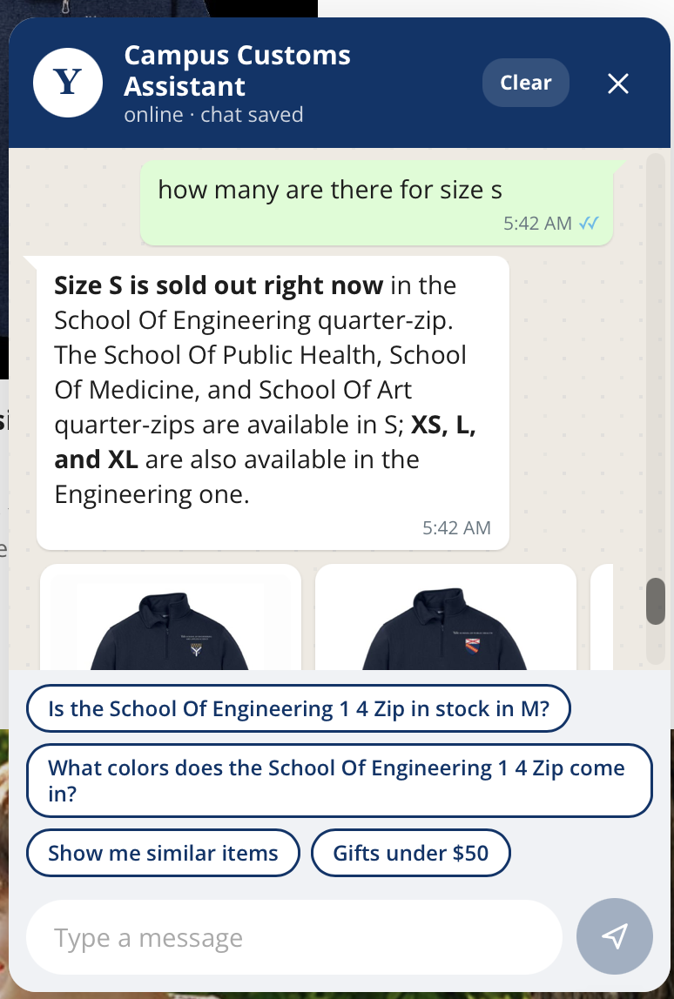
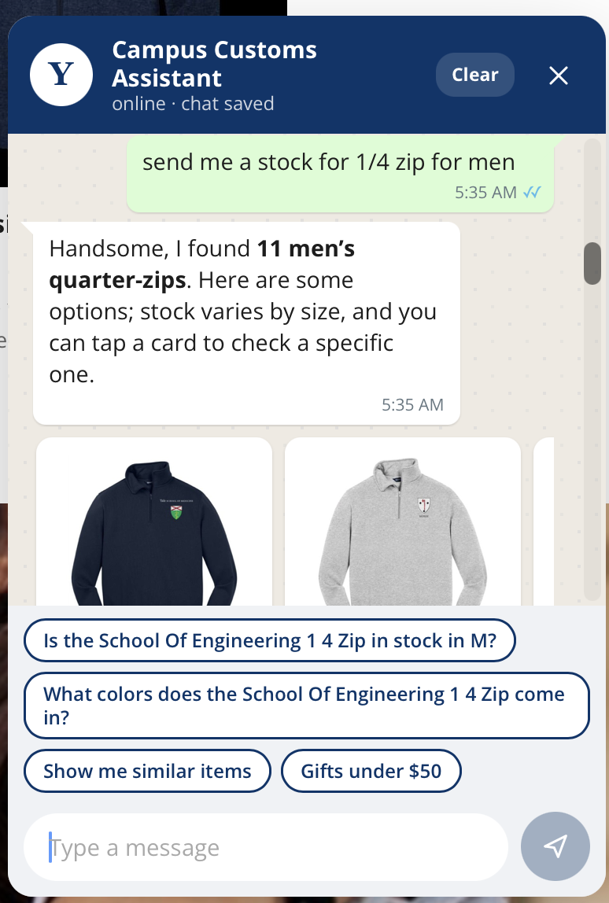
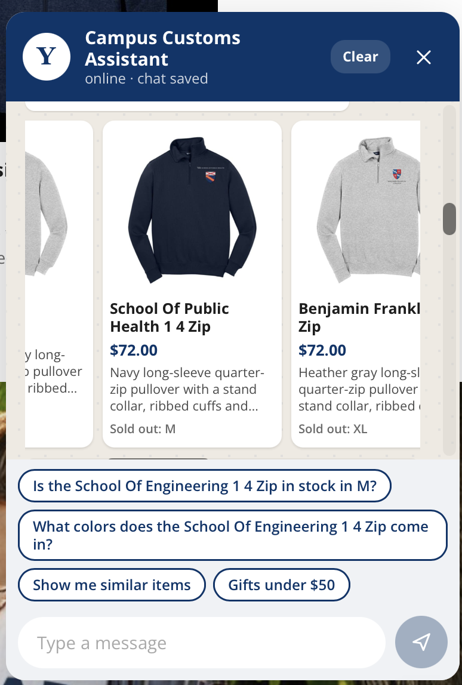
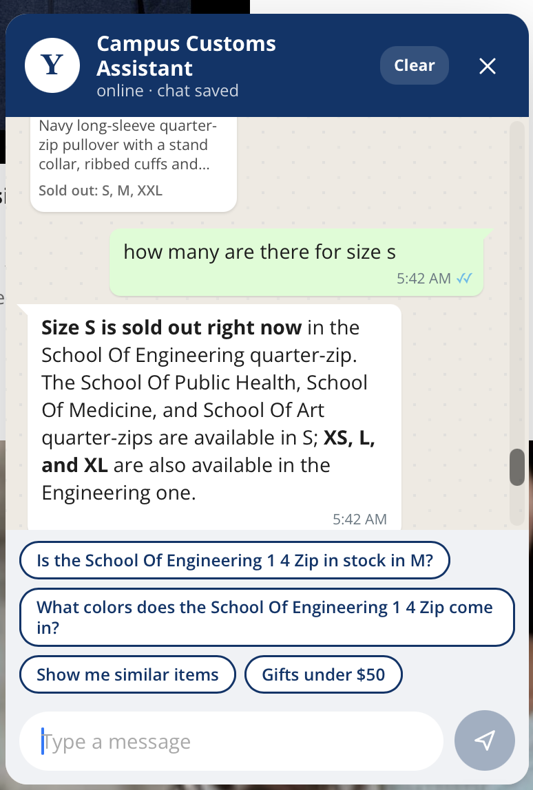

Summary
| # | Check | Result | Key finding |
|---|---|---|---|
| 1 | Inventory level | Accurate, cluttered | Stock answers are correct. However, the same product card and the suggestion chips repeat after every reply and crowd the chat window. |
| 2 | Dynamic search-result cards | Works as intended | Relevant cards show the price and the sold-out sizes, and each card opens the full product pop-up. |
| 3 | Usability: alternatives for sold-out sizes | Works, with a refinement | It offers both other sizes and similar items. For school-specific products, it should favour the same school's item first. |
1. Inventory Level
Accurate, clutteredCan the assistant report the stock of a specific product, size by size, across a multi-turn conversation?










2. Dynamic Search-Result Cards
Works as intendedWhen a shopper asks for a category, does the chat show relevant product cards that lead to the product details?




Commentary
The search returned several products that match the requested category. Each card shows the product photo, name, price, a short description, and which sizes are sold out, so the shopper can compare options at a glance.
Clicking a card opens the product pop-up with the full details: photos, title, price, description, and size options. This takes the shopper straight from the conversation to the product.
3. Usability Feature: Alternatives for Sold-Out Sizes
Works, with a refinementWhen a requested size is sold out, does the assistant offer useful alternatives rather than a dead end?


Commentary
When the requested size was sold out, the assistant used the suggest_alternatives tool and offered two kinds of options:
- Other sizes of the same product: XS, L, and XL.
- Similar items in the requested size: the School of Public Health, School of Medicine, and School of Art quarter-zips.
The availability it stated is correct.
This approach works well where products in a category differ mainly by colour. In our catalogue, though, quarter-zips differ by school, and shoppers are likely to want their own school's design rather than another school's. The suggestions should therefore put other sizes of the same school's product first. Other schools' items should appear only as a secondary option, or within a school-specific sub-category.
Commentary
The assistant answered every inventory question correctly. It gave the product, its price, the sold-out sizes, and exact per-size counts. All of these match the database: XS, L, and XL have 25 units each, and S, M, and XXL have 0.
The presentation, however, needs work:
Together, these filled the chat window and pushed the conversation out of view. Recommendations: